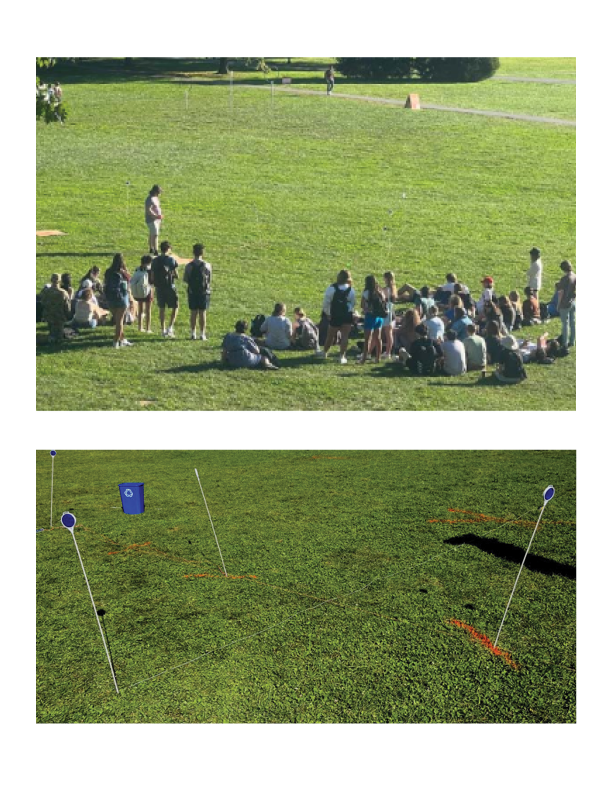

Hi! My name is Kyle Zachrich.
I'm interested in all things at the intersection of mathematics (XYZ) and design (RGB).
Including
Making procedural 3D models and materials in Blender's Geomerty Nodes and Unity's Shader Graph
Animating in After Effects and Cinema 4D
Data visualization
Industrial Design in CAD
Participating in game jams with the Seattle team 'Left Out'
...and building this website!
Below is a collection of student submissions from a series of courses titled 'Geometry and Mathematics of Design' I taught and developed curriculum for at Virginia Tech.
Grid Deforming with Parametric Equations
Tiling according to Conway's Criterion
Perspective Drawing Using Cross Ratio Calculations
Educational Materials
The first year that I taught this geometry course, I noticed that students were having more difficulty than usual in making geometric constructions using a compass and straight-edge. In my estimation, one of the issues with this exercise was that students fail to see the possibility of any practical application for making these kinds of constructions.
I have some students studying Landscape Architecture who take geometry as a required course, and I wanted to make a task that catered to their interests, so I put my students in an environment where measuring distance with a ruler was less practical than using some basic tools.
After approaching the topic this way, there was a marked increase in students’ test scores with these types of problems on exams. I believe part of this increase was due to the conversations that groups had with each other, as well as the conversations I had with students out on the field. Before letting them move onto the next task, I made sure that each group could confidently explain their process.

I'm in the process of updating this website to include more of my personal projects.
In the mean time, please feel free to download an old print portfolio
Kyle Zachrich
Email: XYZandRGB@gmail.com
Phone: 248.321.9430
I'm currently looking for work in Seattle! Most of my recent work experience has been as college instructor of mathematics, statistics, and design.
I'm interested in roles in the areas of curriculum development, motion graphics, data visualization, industrial design, and staff training